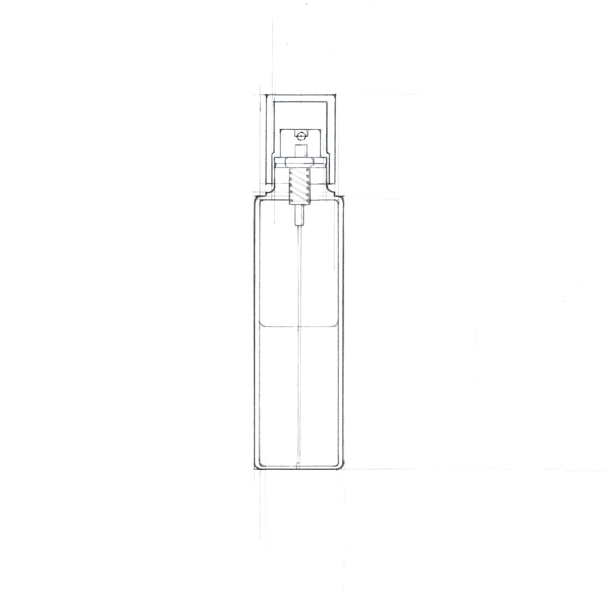
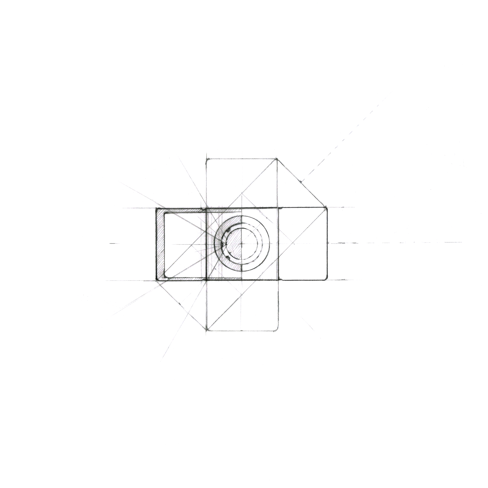
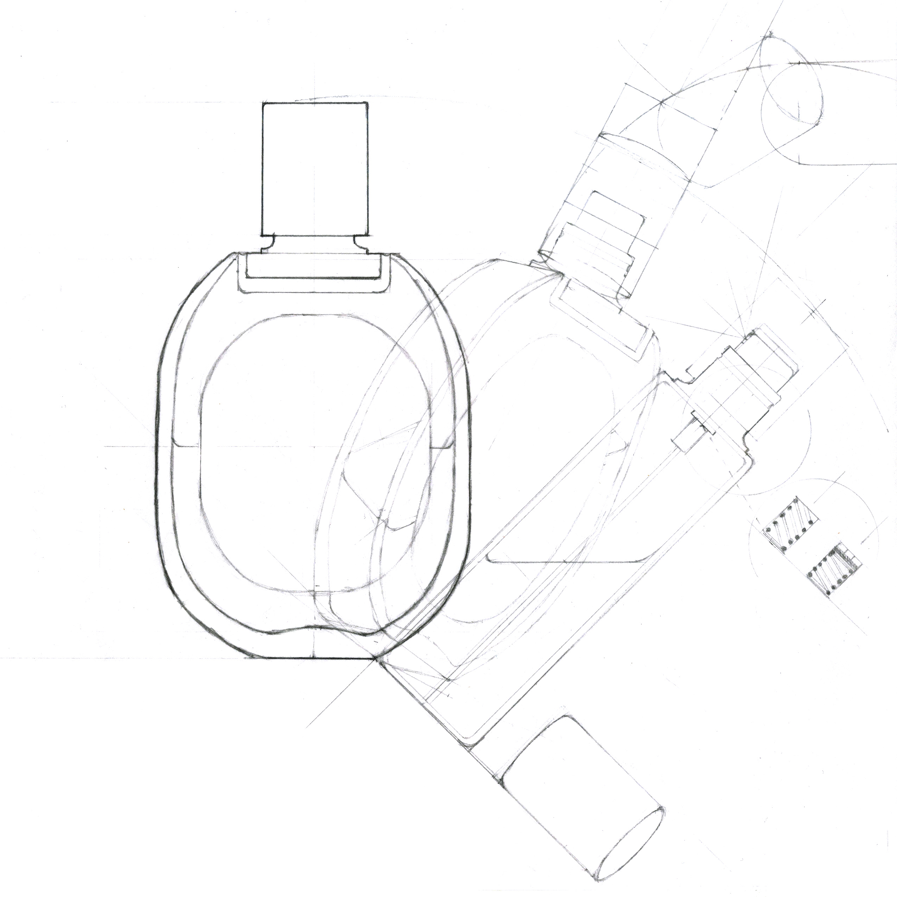
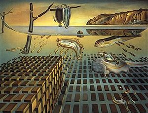

<!DOCTYPE html>
<html lang="en">

<head>
    <meta charset="utf-8">
    <meta http-equiv="X-UA-Compatible" content="IE=edge">
    <meta name="viewport" content="width=device-width, initial-scale=1">
    <!-- The above 3 meta tags *must* come first in the head; any other head content must come *after* these tags -->
    <title> Multidiscipline | Architecture Duality</title>
    <link rel="icon" href="img/fav.png" type="image/x-icon">

    <!-- Bootstrap -->
    <link href="css/bootstrap.min.css" rel="stylesheet">
    <link href="ionicons/css/ionicons.min.css" rel="stylesheet">

    <!-- main css -->
    <link href="css/style.css" rel="stylesheet">

    <!-- modernizr -->
    <script src="js/modernizr.js"></script>

</head>


<body>

    <!-- Preloader -->
    <div id="preloader">
        <div class="pre-container">
            <div class="spinner">
                <div class="double-bounce1"></div>
                <div class="double-bounce2"></div>
            </div>
        </div>
    </div>
    <!-- end Preloader -->

    <div class="container-fluid">

        <!-- box header -->
        <header class="box-header">
            <div class="box-logo">
                <a href="index-schoolportfolio.html"></a>
            </div>
        </header>
        <!-- end box header -->
    
    </div>
    
    <!-- main-container -->
    <div class="full-container">

        <div class="container no-padding">
            <div class="col-lg-10 col-lg-offset-1 col-md-12 col-sm-12 col-xs-12">

            <div class="page-info">
            
            <!-- top section  -->
                <section>
                    <div class="h-30"></div>
                    <h2>A square is a circle <br>
                        A start is an end. <br>
                        Nothing. Nothing is definite. 
                    </h2>
                </section>
    
                
            <!-- content sub section -->        
            <section>
                <div class="row page-info">
                    <figure>
                        
                        <figcaption>The cosmos of square vs circle affinity via a dancing perfume bottle | Combination drawing <br></figcaption>
                    </figure>
                        <div class="h-30"></div>
                        <div class="col-lg-4 col-md-4 col-sm-12 col-xs-12">
                            <h4>A square is a circle</h4>
                        </div>
                        <div class="col-lg-8 col-md-8 col-sm-12 col-xs-12">
                            <div class="page-content">
                                <p>While developing the concept, the bottle cap of the perfume 
                                    bottle begin to manifest a strong representation of duality. 
                                    Hence the main idea behind the drawing evolves into an integral system of duality of opposing concepts. 
                                    <br> The idea carried through in multiple dimensions. <br> First of all, 
                                    a cylinder can be viewed both as a circle or a square, depending on the perspective of projections. This system is 
                                    also used as a demonstration of the wave and particle duality of light/photons. 
                                    <br> The duality idea also comes through via 2D vs 3D systems, 
                                    when a 2D drawing could be easily read 3D, a technique oftentimes used by architects.<br>
                                    Finally have a phrase in Chinese language that is “没有规矩，
                                    不成方圆”. In its literal meaning, 规 is compass, and 矩 is ruler; any forms of drawings can be recreated by a ruler and a 
                                    compass; without any of which, no square nor circle, hence 
                                    no system, can be formed. <br>The square and a circle inderdepend in changes - the conflicts and correlations, divergence 
                                    and convergence, integrate into desciplines, system, or cosmic order. And that is the underlying meaning of the phrase.</p>
                                    <div class="h-30"></div>
                                    
                                    <mark id="formula"> ·  cosmos ·  <br>
                                        the universe seen as a well-ordered whole;<br>
                                        a system of thought.</mark>
                                    <p><br>The name Cosmos has dual meaning to itself, be it the universe seen 
                                    as a well-ordered whole, or simply a system of thought, well 
                                    resembled in the drawing and the ideas behind it.</p>
                            </div>
                            <div class="h160"></div>
                        </div>

                    <div class="h160"></div>

                </div>
            </section>


            <!-- content sub section -->        
                <section>
                    <div class="row page-info">
                        <div class="col-lg-4 col-md-4 col-sm-12 col-xs-12">
                            <h4>The perfume bottle</h4>
                            <p>Selected drawings</p>
                        </div>
                        <div class="col-lg-8 col-md-8 col-sm-12 col-xs-12">
                            <div class="page-content">
                                <!-- image row -->
                                <div class="row">
                                    <figure>
                                        
                                        
                                        
                                        <figcaption>The object, top to bottom: Section, plan, elevation <br></figcaption>
                                    </figure>    

                                </div>   
                            </div>
                            <div class="h160"></div>
                        </div>
                    
                </div>
                </section>

                <!-- content sub section -->        
                <section>
                    <div class="row page-info">
                        <div class="page-content">
                            <figure>
                                
                                <figcaption>The finale · Duality of the opposing square & circle | Figuration drawing <br></figcaption>
                            </figure>
                            <p class="right"><i>无名，天地之始；<br>
                                有名，万物之母。<br>
                                故常无欲，以观其妙；<br>
                                常有欲，以观其徼。<br>
                                此两者同出而异名，
                                同谓之玄。<br> 
                                玄之又玄，众妙之门。<br> 
                            -- 老子 《道德经》</i></p>
                            <p><i>The Nameless is the origin of Heaven and Earth;<br>
                                The Named is the Mother of All Things. <br>
                                Therefore:<br>
                                Oftentimes, one strips oneself of passion
                                In order to see the Secret of Life;<br>
                                Oftentimes, one regards life with passion,
                                In order to see its manifest forms.<br>
                                These two (the Secret and its manifestations)
                                Are (in their nature) the same;<br>
                                They are given different names
                                When they become manifest.<br>
                                They may both be called the <b>Cosmic Mystery:</b><br>
                                Reaching from the Mystery into the Deeper Mystery
                                Is the Gate to the Secret of All Life.<br>
                            -- LaoZi, Tao and Teh (Lin Yutang translated) </i></p>
                                <div class="h160"></div>
                        </div>
                    </div>
                </section>

                <!-- content sub section -->        
                <section>
                    <div class="row page-info">
                        <div class="page-content">
                            <p>Partially inspired by.</p>
                            <div class="col-lg-4 col-md-6 col-sm-6 col-xs-8">
                                
                            </div>
                            <div class="col-lg-8 col-md-6 col-sm-6 col-xs-4 right">
                                <p><i>Salvador Dalí <br>The Disintegration of the Persistence of Memory</i>
                                </p>
                            </div>

                                <div class="h160"></div>
                        </div>
                    </div>
                </section>               

            </div>
            </div>
        </div>

    </div>
    <!-- end main-container -->

    <!-- back to top -->
    <a href="#0" class="cd-top"><i class="ion-android-arrow-up"></i></a>
    <!-- end back to top -->


    <!-- jQuery -->
    <script src="js/jquery-2.1.1.js"></script>
    <!--  plugins -->
    <script src="js/bootstrap.min.js"></script>
    <script src="js/menu.js"></script>
    <script src="js/animated-headline.js"></script>
    <script src="js/isotope.pkgd.min.js"></script>


    <!--  custom script -->
    <script src="js/custom.js"></script>

</body>

</html>